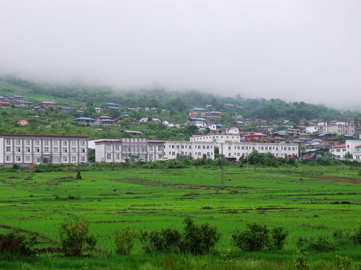

来自一上攀岩

寂寞沙洲冷
楼主

一个爱摄影的户外玫瑰
匆匆多少时光，怎抹尽胭脂朱点唇？莫耽于享受，华年逝水，女子如何？雄心共在！抖擞精神河岳新。看铿锵玫瑰，如何游遍山川！玫瑰艳丽，但总是带刺，人们为何还是钟爱？因为她是独立的，是骄傲的，是做自己的!小芳，一名职场打拼的普通女性，更是经历风雨洗礼的户外玫瑰！相信每个人见到她，都会惊叹她容颜的年轻，似乎岁月并未在她的脸上留下更多痕迹！看来运动的功效真是无可估量~

2016-03-03
1545484
56
231人赞过


寂寞沙洲冷
楼主
2楼
第一次远行来到了我神往的云南
丽江，只因为一张照片，古老的水车推着缓缓的河水，漫不经心的流转着闲散的时光。2007年，我只身一人飞到云南，来到丽江，古朴的四方街，青亮泛光的石板路，还有清晨阳光里匆匆而过的道士，身背七星的纳西女子，东巴灯的昏黄光芒下，胖金哥和胖金妹辛勤的打着丽江粑粑……喧嚣似乎很遥远的地方，跟丽江完全没有交集，青瓦素墙，小桥流水，更有经久流传的丽江往事！这一切，都深刻在脑海中，即便过去多年，回想起来，仿佛如昨。

2016-03-03
1545484
56
寂寞沙洲冷
2016-01-02 23:00
3楼
感觉这个活动很有意思
寂寞沙洲冷
2016-01-02 23:00
4楼
感觉这个活动很有意思